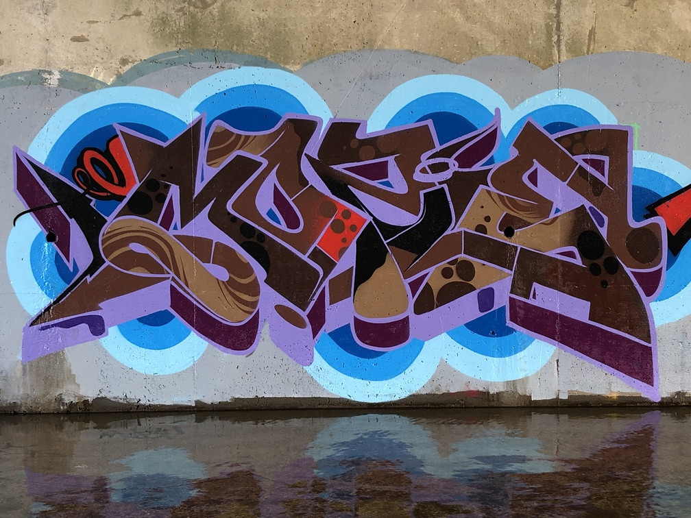

Heres me skateboarding

I've been skating since I was around 11 and I thought that skateboarding was the coolest thing ever after I first played the Tony Hawk Pro Skater series. Once I saw actually footage of pro skaters from the Tony Hawk games thats when I realzied that I wanted to do this too.
Some of my favourite skaters are Paul Rodriguez, Andrew Reynolds, Brandon Westgate, and recent gold medalist at the first ever Skateboarding Olympics Yuto Horigome. I suggest watching Paul Rodriguez's Thrasher Classic video "Yeah Right", to me this part never gets old, Paul's skills, technicallity and his effortless stlye on his skateboard in this video is unmatched in my opinion. One fun fact about Paul Rodriguez is that he is one of the first people to have the Michael Jordan Jumpman logo incorparated onto their Pro-Model shoe.
Here Are Some of My Fave Toronto Maple Leafs Players.
These are illustrations done by me on Adobe Illustrator of some of my favourite Leafs. These players here are some of the most popular Toronto Maple Leafs' of all-time.
Wendel Clark
Though I never got to watch Wendel Clark in his prime as a Maple Leaf, he was known for his intense style of play, gifted with a mean wrist shot, great offensive sense and the ability to knock you into the next dimension, Wendel Clark was a juggernaut on ice and a force not to be reckoned with. With these combined attrubutes it made Wendel Clark the peoples champ in Toronto and one of the greatest captains in Maple Leafs history. ( He also has a statue in front of the ACC).
Felix Potvin
Felix "The Cat" Potvin, is a goaltender and became an instant fan fave after he helped the Toronto Maple Leafs almost reach the Stanley Cup Finals in 1992-93 season. His tenuer in Toronto lasted almost a decade and he has 3rd most wins (160) in the Toronto Maple Leafs franchise. Potvin is also known for having one of the best masks in the NHL which was a part of his popularity and part of the reason why I chose to do an illustration of him.
Mats Sundin
Mats Sundin is a hall of famer and one of the greatest captins in Maple Leafs history. Sundin holds the franchises records for most goals with 420, most points with 987 and most game winning goals 79 which led to his nickname "Captin Clutch". Sundin's size mixed with his amazing skill and consistnecay (12+ seasons with 70 or more points) made him into a superstar and a player that oppistions feared to defend. He led the team to 2 confrence finals but ultimatley fell short of reaching the Stanley Cup Finals. He is the first european player to be drafted 1st overall and the first european captin in Maple Leafs' history and helped paved the way for many other europeans entering the NHL.
Graffiti
Below are some of my favourite graffiti writers in Toronto, they go by the names of Globe, Mozie, and Rons. I really like these artist because of their style. To better explain style, it is when you take the letters in a word and manipulate the letter by bending its shape and adding arrows/stars/hearts (known as isms) or combining letters by mergeing bars of letters together. These artist are some of the best in the city and are known for their abilities to style letters, some are even known internationally.
Globe - GH,WH (Golden Horseshoe, Writing History)
Mozie/Mozy - UNC (Urban Nightmares Crew)
Rons - HSA (Humble Servants of Art)
Thanks for scrolling through some of my intreserests and I hoped you enjoyed some of the content that I provided.